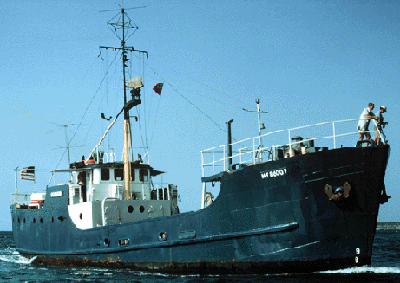

|  copyright - WHOI |
|
The Woods Hole Oceanographic Institution purchased Explorer,
a coastal cargo ship, in March 1962 from a marine salvage yard. As a way
of distinguishing this ship from the many other “Explorers in existence,
it was named Gosnold by its master Harry Seibert, naval architect
John Leiby, and Port Captain John Pike in honor of the captain Bartholomew
Gosnold, the first European to land and settle in Woods Hole (1602). The
vessel made 206 cruises from Maine to South America and out to Bermuda,
covering all types of ocean sciences. Gosnold was transferred to
the Harbor Branch Oceanographic Institution, Florida, in October 1973,
where it continued to work.